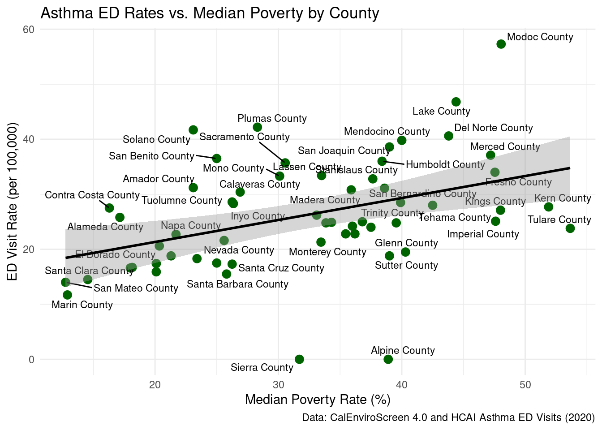

Asthma, a chronic respiratory disease, is a persistent public health concern throughout California. Asthma is exacerbated by environmental exposures like air pollution as well as social stressors. We evaluated how asthma-related emergency department (ED) visits are associated with environmental exposures (air pollution, traffic diesel PM) and social vulnerability (poverty). We evaluated whether county-level summaries of the CalEnviroScreen (CES) 4.0 measure and the specific tract-level environment indicators (PM2.5, diesel PM, traffic, poverty) align with county asthma ED visits rates. Our goal was to identify counties where cumulative environmental and social burdens coincide with high asthma ED rates and to flag specific environmental measures for further investigation or targeted intervention.
We focused on county-level comparison because public health actions relating to environmental exposures and asthma are implemented at a higher level. By aggregating county-level measures and comparing them to CHHS asthma ED rates, we will assess the correlation between a county’s CES summary and CHHS asthma burden and examine whether individual environmental indicators like PM2.5 and diesel PM, or socioeconomic indications like poverty, identify a relationship with asthma ED rates that merit deeper inquiry.
Methods
We used 3 main sources with 2021 data: CalEnviroScreen tract-level measures (calenviroscreen_measures_2021.csv), CES demographics and scores at tract-level (calenviroscreen_scores_demog_2021.csv), and county asthma ED visit data from California Health and Human Services (chhs_asthma_ed.csv). In order to be able to combine and compare data from each of these sources, we cleaned each source, ensuring column and row names matched between each dataframe. We also created county-level summary variables, merged data into single-county datasets, and ran descriptive statistics, visualization, stratified comparisons, and regression/correlation analysis. At the end we produced quality tables and gt/ ggplot2 and ran RPubs- published HTML.
Date source 1: OEHHA CalEnviroScreen
We cleaned up the names to be consistent, converted census_tract to characters to preserve leading zeros. Then we recoded sentinel numeric values (-999,-1) to N/A, and to be more specific in the environmental measures we picked: pm2_5, diesel_pm, poverty, traffic. With these measurements we computed the median for each of them and created county by title casing the california_county field and appending “County”. The median was chosen for tract measures to reduce influence of extreme tract values when summarizing across heterogeneous counties.
Data source 2: CES Scores and Demographics
We had to clean the names up by combining the title case and County. Aggregate tract CES scores to the county level using the mean of ces_4_0_score to produce mean_ces_4_0_score. Then the sum tract total_population to produce a county total_population. As we created categorical CES variables ces_category by tertiles (high,moderate,low) using the ⅓ and ⅔ quantiles of mean_ces_4_0_score to enable statistical comparisons and linear regression with lm(ed_rate ~ mean_ces_4_0_score) to quantify association between CES and asthma ED rates.
Data source 3: CHHS Asthma ED Data
This dataset comes the California health and human services asthma emergency department (ED) visit record, which reports county-level counts and rates by year, age group, and race/ethnicity. We wanted to limit the data to align with 2020 and CES 4.0 and this will match our dataset. When apply the clean the data we restricted it to “Total Population” and removed the statewide aggregate “California” to remain only county-level observations. For the county we standardized the “County” suffix, and numeric variable were checked for sentinel missing value, with N/As handled according to documented rules (converted to zero where appropriate). We created ed_visits_per_100k using both the calculated rate (number_of_ed_visits / total_population × 100,000) and the CHHS provided age_adjusted_ed_visit_rate, using age-adjusted rate for the primary analyses to ensure comparability across countries with different age structures. The analytic step generates datasets that makes descriptive summaries of ED counts and rate, merging with CES scores and the environment indicator, producing top 10 county tables, and assessing association through Pearson/Spearman correlation and simple linear regression with coefficients, 95% Cls, and R². With this information we generated scatterplots and boxplots, noting that results represent ecological pattern and may be affected by residual confounding.
Results
# read in and clean all 3 files (reuse from Milestone 3)# chhs_asthma_ed, calenviroscreen_measures_2021, ces_scores_demog# ... your existing df_asthma, df_env_measures, df_scores code ...df_combined <- df_scores %>%left_join(df_asthma, by ="county") %>%left_join(df_env_measures, by ="county")# any extra derived variables (env_exposure_index, ces_category, etc.)# e.g.:df_combined <- df_combined %>%mutate(ces_category =case_when(mean_ces_4_0_score >=quantile(mean_ces_4_0_score, 2/3, na.rm =TRUE) ~"High",mean_ces_4_0_score <=quantile(mean_ces_4_0_score, 1/3, na.rm =TRUE) ~"Low",TRUE~"Moderate"))str(df_combined)
tibble [58 × 11] (S3: tbl_df/tbl/data.frame)
$ county : chr [1:58] "Alameda County" "Alpine County" "Amador County" "Butte County" ...
$ mean_ces_4_0_score : num [1:58] 22.9 13.6 20.7 21.7 16.1 ...
$ total_population : int [1:58] 1656754 1039 38429 225817 45514 21454 1142251 27495 188563 984521 ...
$ year : num [1:58] 2020 2020 2020 2020 2020 2020 2020 2020 2020 2020 ...
$ number_of_ed_visits : num [1:58] 4282 0 103 474 111 ...
$ age_adjusted_ed_visit_rate: num [1:58] 25.8 0 31.2 24.2 30.4 24 27.5 40.6 20.6 34 ...
$ median_pm2_5 : num [1:58] 8.71 3.05 8.24 8.45 8.44 ...
$ median_diesel_pm : num [1:58] 0.26041 0.00262 0.01219 0.0703 0.00744 ...
$ median_poverty : num [1:58] 17.1 38.9 23.1 36 26.9 ...
$ median_traffic : num [1:58] 928 70.2 212.7 455.3 214.8 ...
$ ces_category : chr [1:58] "Moderate" "Low" "Moderate" "Moderate" ...
Stratified table: asthma by CES category
Asthma ED Rates and Environmental Indicators by CES Category
CES Category
Mean Asthma ED Rate (Age-Adjusted)
Mean PM2.5 (Median, µg/m³)
Mean Poverty (Median, %)
High
29.42
10.34
39.46
Low
20.69
6.73
25.91
Moderate
28.65
7.42
30.85
Interpretation: High-CES counties have higher mean asthma ED rates as well as higher mean PM2.5 and poverty compared to Low-CES counties, supporting the idea that combined environmental and social vulnerabilities are associated with worse asthma outcomes.
Create ed_visits_per_100k as a renamed version of that rate for visualizations
Interpretation: The positive slope suggests that counties with higher CES 4.0 scores tend to have higher asthma ED visit rates, indicating a possible link between cumulative environmental/social burden and asthma.
County-level summary table
Purpose: Show key county metrics side by side for easy comparison.
Interpretation: Lets you see which counties have both high environmental exposure and high asthma rates. Could help prioritize intervention targets.
Stratified summary table Purpose: Compare asthma rates by poverty level or CES category. Example: Mean asthma ED rate by CES category:
Interpretation: Shows if high CES or high poverty counties tend to have higher asthma ED rates.
Plot 2: Boxplot of asthma ED rates by CES category
Purpose: Visually compare distributions across “Low,” “Moderate,” and “High” CES counties.
Interpretation: The distribution of asthma ED rates is shifted higher in High CES counties compared to Low CES counties, highlighting disparities in asthma burden across environmental risk levels.
Plot 3: Asthma ED Rates vs. Median Poverty by County

Interpretation: Counties with higher poverty rates often exhibit higher asthma ED visit rates, suggesting that socioeconomic factors may contribute independently to asthma burden.
Discussion
The results consistently show that counties with higher cumulative environmental burdens, measured through CES 4.0, also experience higher asthma-related emergency department (ED) visit rates. The correlation analyses and descriptive summaries point in the same direction: as CES scores, pollution indicators, and poverty increase, asthma ED visit rates increase as well.
The findings underscore the connections between environmental justice, community conditions, and respiratory health. Counties with higher CES scores are often communities facing structural disadvantage, higher pollution exposure, and fewer protective resources. Higher asthma ED visits in these counties highlights how environment inequities translate into real health consequences. This means for policymakers and public health agencies that interventions aimed at improving asthma outcomes cannot focus solely on clinical care, they also need to address environmental exposures, access to preventive resources, and neighborhood infrastructure.
Some limitations may include that these results are based on a county-level aggregate, which reduces local variation